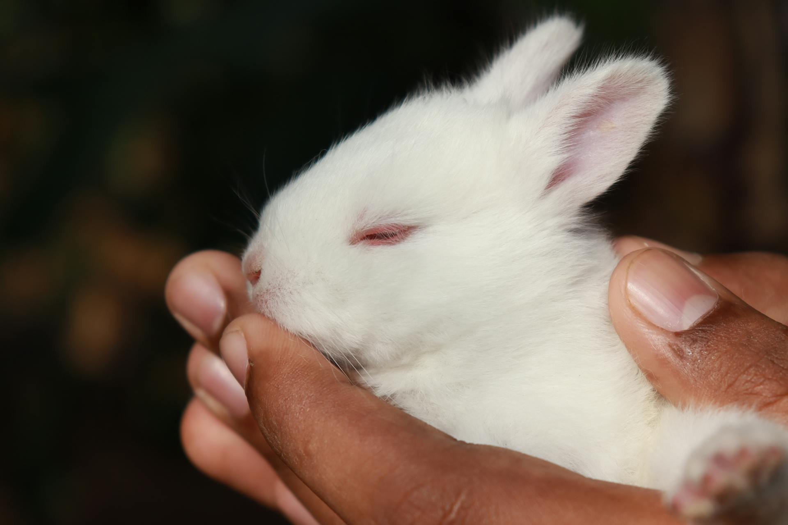

Go now
Red flag emergency
- Not eating and no droppings (gut stasis)
- Bloat or obvious belly pain
- Heatstroke, collapse, or seizure
- Flystrike or a fresh open wound
- Sudden head tilt, rolling, or trauma

RabbitEmergency.com helps you recognize urgent warning signs, prepare for the clinic call, and understand vet-guided support from Alfavet RodiCare and WOOLY daily care for digestion, appetite, gut rhythm, moulting, and recovery.
Built for rabbit owners across Hong Kong, Tokyo, Taipei, Singapore & Bangkok
Every path starts with veterinary assessment. The product suggestions below are support conversations to have with your vet, not instructions for emergency care at home.
Vet-reviewed guides written for the moments owners panic-search. Each one ends with the same rule: assess urgency first, then ask a rabbit-savvy veterinarian.
Why gut stasis is a true, time-critical emergency in rabbits.
Recognising heatstroke and cooling a rabbit safely on the way to the clinic.
Telling normal caecotrophs apart from diarrhoea that needs a vet today.
Sudden tilt, rolling, and balance loss — what to do first.
Rabbits can't cough up hairballs — moult-season gut slow-down.
Appetite, syringe feeding and convalescence after the vet visit.
Two layers, one journey. WOOLY is the daily Japanese rabbit-specialist foundation — gut balance, moult, hydration, condition and age-staged nutrition. Alfavet RodiCare is the German vet-channel acute and recovery layer for when daily care is no longer enough.
Everything here is owner-sign led and claims-disciplined: it supports digestion, appetite, hydration and recovery as part of a vet-led plan. It does not replace emergency care.
The owner-visible, everyday layer: gut balance, moult, hydration, condition and age-staged nutrition — built by a rabbit-exclusive Japanese specialist. This is the routine that keeps a rabbit out of the emergency room.
Pineapple enzyme (bromelain) and papain with added Japanese apple fibre. WOOLY positions Active E for moulting, hair in stool, long-haired rabbits, and appetite changes during shedding.
A three-tier probiotic ladder: classic Rabbit's Lact, Soft Lact for seniors and dental-sensitive rabbits, and Lact LAB with a rabbit-derived strain developed with Nippon Veterinary & Life Science University. For daily gut rhythm and stool quality.
A rabbit-specific balanced drinking-water supplement for low drinking, hot weather, travel, and harder-stool concerns — a hydration SKU with no direct competitor in the category.
A breeder-origin (Heinold lineage) calorie and nutrient booster. WOOLY positions Enhancer for growth, senior condition, moulting, pregnancy and lactation, and post-spay/neuter recovery support.
Premium senior-vitality and long-term-condition tablets — WOOLY's daily-care entry point for older, weaker, or post-stress rabbits, with a higher-tier Vitality Source's Power option.
Four age-calibrated complete feeds (≤ 2 / 2–5 / 5–8 / 8+ years) built on a rabbit-derived lactic-acid-bacteria platform with moringa and spirulina, designed for more chewing and less stickiness.
The vet-channel GI and recovery layer for rabbits, guinea pigs, and small rodents — for when daily care is no longer enough and a veterinarian is leading the plan.
Alfavet positions RodiCare akut for the regulation of digestive processes in rabbits, guinea pigs and small rodents — supporting vital intestinal flora and stimulating appetite and intestinal activity. No added sugar.
Alfavet positions RodiCare Dia for physiological digestion in dwarf rabbits and guinea pigs, with bentonite, sodium butyrate, and short-chain fatty acids including butyrate and propionate. Best discussed with your vet first.
Alfavet positions RodiCare Appetit for poor-eating rabbits, guinea pigs and small rodents, with calamus and ginger — a simple, owner-recognisable answer to the appetite-down moment.
Alfavet describes RodiCare Päppelpaste as a ready-to-use recovery and convalescence paste for rabbits and guinea pigs — targeted feeding, ready to use without mixing, in two handy 30 ml injectors with very good acceptance.
Alfavet positions RodiCare Hairball for moulting and hair-in-stool risk in dwarf rabbits and guinea pigs, with lactulose, psyllium husks, fennel, camomile and peppermint. No sugar or cereals.
Alfavet's RodiCare series includes immune-support options positioned to help rabbits and small rodents through stress, season change, and recovery periods. Discuss with your vet as part of a recovery plan.
Real owner stories from the markets we serve — the moments the checklist helped, and how the recovery section made vet-recommended products make sense.
The checklist made it clear that not eating and no droppings was an emergency. We were at the exotic vet within the hour.
I did not know a rabbit could get so sick so fast. This page made me call a rabbit-savvy vet the same night.
The page was blunt: a rabbit that stops pooping cannot wait. We went straight to emergency care.
After the vet visit, the recovery section helped me understand the RodiCare paste they recommended. Nothing felt like a sales pitch.
New to the city and terrified my rabbit was overheating. The call-prep fields meant I could explain everything despite the language barrier.
With three rabbits I bookmarked this. The moult-season gut slow-down guide matched exactly what our vet later explained.
Our rabbit would not eat after a dental. Understanding the syringe-feeding recovery support took away so much of the fear.
It kept reminding me the vet comes first. That honesty is exactly why I trusted everything else on the page.
Soft, smelly stool in our baby rabbit scared us. The guide said diarrhoea in a young rabbit is urgent, so we called immediately.
The bilingual layout helped. I could send the same summary to my helper and the clinic without rewriting everything.
My rabbit was hunched and grinding her teeth. Seeing belly pain framed as urgent made me book the appointment before it got worse.
The recovery shelf helped me understand why the vet talked about gut support after treatment, not just during the upset itself.
Someone shared the gut-stasis section in our rabbit group. It made the difference between waiting and going to the clinic.
During a heavy moult our rabbit slowed right down. The hair-in-stool guide gave me the right questions to ask the vet.
I used the vet-call summary while waiting for the taxi. It kept me calm and gave the nurse the details she needed.
The page was clear about how fast rabbits overheat here. That was exactly what I needed on a hot afternoon.
After surgery my rabbit refused food. The recovery section helped me ask about syringe feeding without sounding dramatic.
The call-prep format helped me explain the symptoms clearly, especially when my rabbit stopped passing droppings.
I was not sure if hiding and not eating counted as urgent. The page made me call instead of searching for another hour.
The clinic used the same words from my summary when they triaged us. The whole process felt less chaotic.
Until named clinical reviewers and license details are published, this page presents a conservative source-led review framework rather than claiming named veterinarian approval.
Red-flag signs direct owners to a rabbit-savvy veterinarian before any product or home-support discussion.
Owner guidance is checked against public rabbit-welfare and emergency-care sources listed at the bottom of the page.
RodiCare and WOOLY are framed as support conversations after veterinary assessment, not emergency treatment substitutes.
Clinic cards now behave as search routes until a clinic name, hours, phone, species capability, and permission to list are verified.
RabbitEmergency.com is a consumer-first portal that sends worried rabbit owners straight to vet-led care. For clinics, it hosts your profile, your vet-reviewed emergency guidance, and symptom-based referral routing — with the Alfavet RodiCare German vet-channel shelf and WOOLY daily care as your built-in recovery aisle.
Many general-practice vets do not see rabbits. Rabbit owners lose precious time finding a rabbit-savvy clinic and describing the problem. These verified clinic listings help owners move faster while still confirming rabbit capability before travel.
Type your city or district and we will show sourced clinic matches. Always confirm rabbit capability, opening hours, and appointment instructions before travelling.
Choose your city, open the official clinic site, call first, then use the call-prep form below so the team gets the important details fast.
Fill these in before you call or message a clinic. Generate the summary, then share it through LINE only after you choose the receiving clinic.
No. If your rabbit has emergency signs, call or visit a rabbit-savvy veterinarian. The products shown here are supportive options that may be recommended through veterinary practices after the vet assesses your rabbit.
Rabbits are hindgut fermenters with a narrow margin between normal and serious. When a rabbit stops eating and passing droppings, gut motility can slow or shut down and the situation can become life-threatening within hours. Always call a rabbit-savvy vet.
No. A rabbit that is not eating or passing droppings needs veterinary assessment. The RodiCare and WOOLY products support digestion, appetite, and recovery as part of a vet-led plan after diagnosis — not as a home response to a possible emergency.
Alfavet states that RodiCare is available through veterinary practices. WOOLY is daily-care available through rabbit-specialist channels. RabbitEmergency.com should route owners to participating vets and specialty retailers rather than presenting the products as casual over-the-counter fixes.
Every guide is source-cited and pending named veterinary review against RWAF (Rabbit Welfare Association & Fund), House Rabbit Society, and exotic small-mammal medicine standards before publication. Congress partner clinics can also publish their own doctor-reviewed guidance under their profile.
Three clear paths: act on an emergency, understand vet-recommended recovery support, or partner with us as a clinic.
Know in seconds whether this is a "go now," "call today," or "watch closely" moment.
Check signsMake sense of the vet-recommended digestion, appetite and recovery products — after assessment.
See recovery shelfBecome a referral destination for worried rabbit owners and a vet-led recovery partner.
List your clinicEmergency clusters
Condition clusters, printable tools, reviewer proof, and correction routes for owners and clinics who need sourceable answers fast.
Emergency guidance follows RWAF, House Rabbit Society, and exotic small-mammal standards and is reviewed by our veterinary advisory board. Recovery product information is based on Alfavet's RodiCare German vet-channel series and the WOOLY daily-care range.
Start with the hub that matches the sign, then move to the specific guide before calling a rabbit-savvy veterinarian.
Veterinary review: pending. Add real reviewer name, credentials, affiliation, and review date before making a reviewed-by claim.